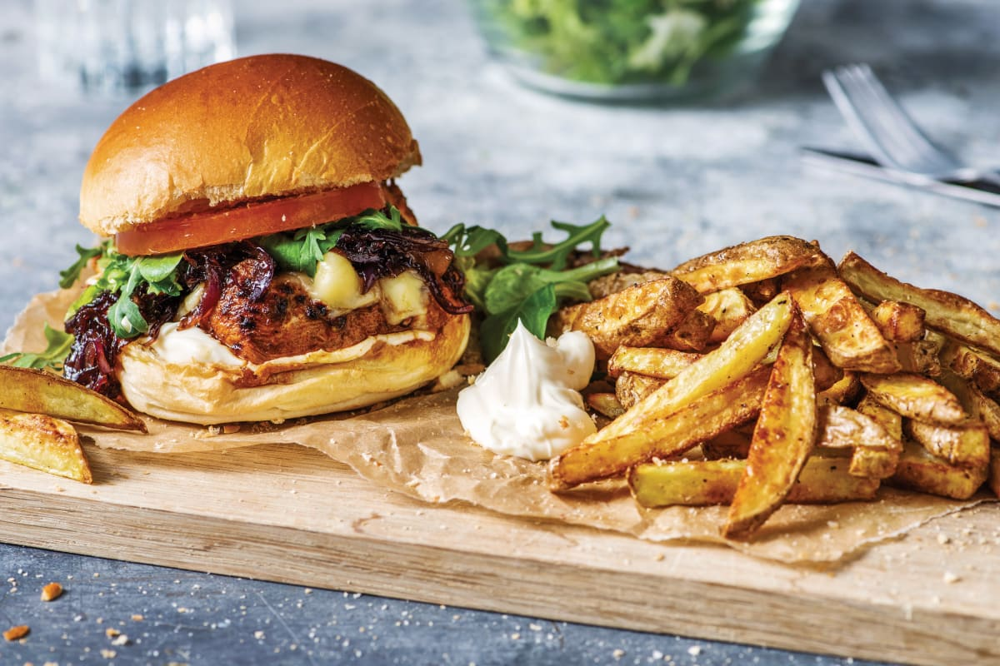

Chicken Burger

Description
Perfect for quick, casual, and filling meals.
Ingredients
- 6 sweet potatoes; cut into wedges
- Salt and pepper
- ¼ cup olive oil
- 6 hamburger buns; cut horizontally and buttered
- 2 tbsp. olive oil
- 1 large pineapple; skin removed and sliced into 5–8 mm thick rounds
- 6 chicken breasts
- 1 bottle of smoky BBQ sauce
- 2 large tomatoes
- A small head of lettuce; washed
- Mayonnaise; to serve
Equipment
- Oven
- Rolling pin
- Timer
- Frying Pan
Steps
- Preheat the oven to 220 °C. Place sweet potato wedges on a roasting tray, then season with salt and pepper and drizzle with oil.
- Roast for 25 min. until golden brown and tender.
- Toast the buttered buns in a dry pan until golden brown, then set aside.
- Using the same pan, add some olive oil and fry the pineapple slices over high heat until caramelised on both sides. Set aside.
- Place the chicken breasts on a layer of cling film, then cover with another layer.
- Use a rolling pin to beat the breasts until they are about 1 cm thick.
- Fry the breasts in a little oil in the same pan on both sides, basting with some BBQ sauce during the last 2 min.
- Remove from the heat.
- Assemble the burgers by placing some lettuce and tomato on the bottom halves of each bun.
- Then top with mayonnaise, a chicken breast, grilled pineapple and the top half of the bun.